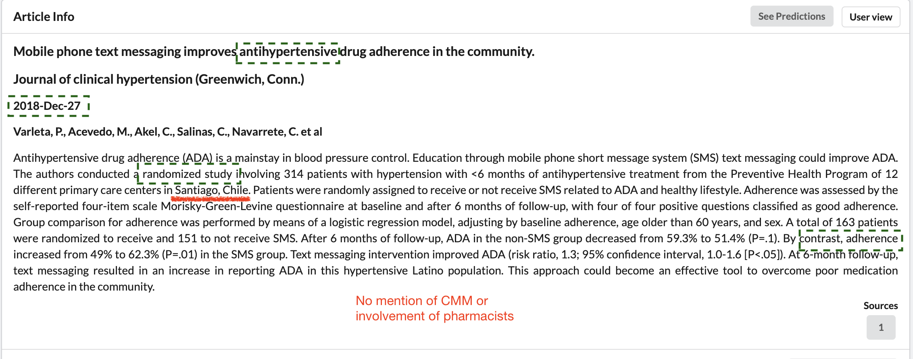
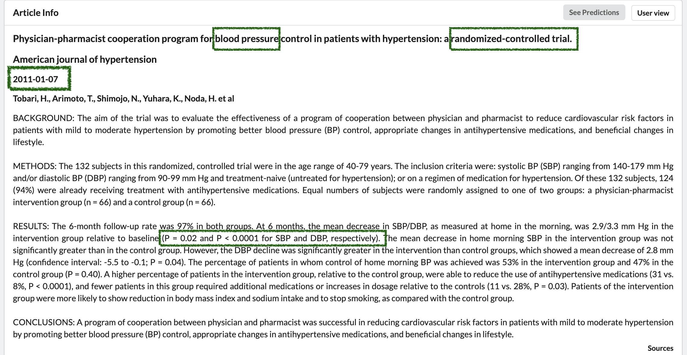
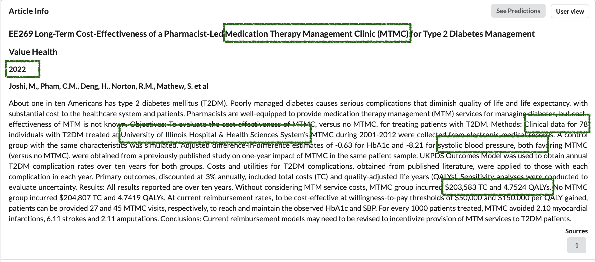
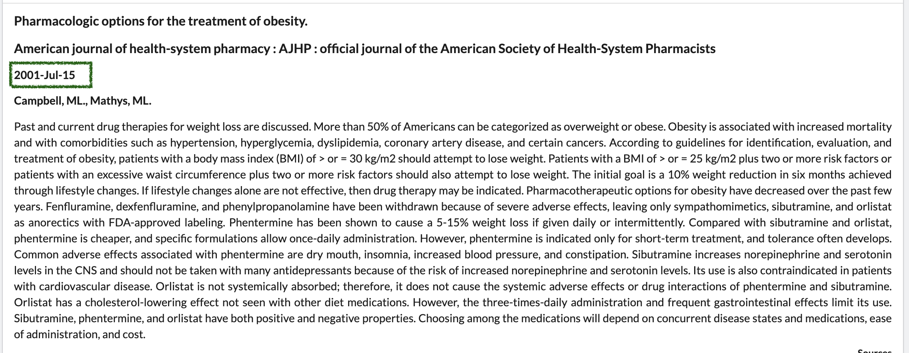

More on Screening and Establishing Concordance
Seyram A. Butame
Division of Chronic Disease and Injury Prevention
Agenda
- Feedback from the group
- Explain concordance/agreement
- Measurement of agreement
- Examples and more

What were your thoughts?
- Are you able to follow the material?
- Are you able to understand the project needs?
- Do you feel comfortable reading titles/abstract?
- What is your experience using the SysRev Platform?

Getting Strong Agreement
- Your help is greatly appreciated
- However, you offer different perspectives.
- Those different approaches may introduce biases (or errors)
- We want to reduce the occurrences of these errors.
- This is where a check for agreement comes in
- The goal is not to have you all screening exactly alike.
- We want to reject a hypothesis that agreement is the same as chance agreement.
What Does Agreement Look Like?
- Selected four of the raters (What was complete at the time)
- Zero ("Exclude") and one ("Include")
- Will call screening into question
- The kappa-statistic shows fair agreement beyond chance
- Ideal statistic is between 0.60 and 0.80, preferrably above 0.80.
Agreement Does Change
- To be expected as there are five of you.
- All five wont perceive of the material in the same way.
So, What Do We Do?
What we will do.
- Review the Inclusion Criteria
- Repeat this process
- Hopeully we have better agreement
- Don't focus on trying to agree with colleagues.
Remember The Seven Criteria
- The type of Intervention
- The study population
- Relevant outcomes
- The type of study
- The study language
- Study set in U.S.
- The study years
Intervention Type
The title or the abstract should have some indication of Pharmacist-led intervention
It can be difficult to get the full details. Researchers likely will not use the same language across publications.
Be on the look out for some of the following:
Population Type
This can be tricky given we are pulling data based on two factors. Patients and providers (i.e., pharamacists)
We want patients living with hypertension/ diagnosed with BP
We will also take study focused on some other disease but it must capture measures for hypertension
Studies focused on providers (i.e., pharamacists) are acceptable, but look for details on the providers interracting with patients with hypertension.
Study Type
There are two main study types we are interested in.
- Experimental Studies (RCTs, Community Trials etc)
- Observational Studies (e.g. corhort, case-control, case studies, quasi experimental)
It may be easier to consider the types of studies we don't want.
- Theses, dissertations, op-eds, news paper articles
- other systematic reviews, review articles, perspectives, publised guidelines
Example I - Exclude
Exclude
Reasons to Include
- Study popuation (i.e., Hypertensives)
- Publication year (i.e., 2018)
- Study type (i.e., Clinical Trial)
- Language (i.e., English)
- Relevant outcomes
Reasons to Exclude
- Wrong Country (i.e., Chile)
- No mention of CMM
Example II - Include
Reasons to Include
- Study population (i.e., hypertensives)
- Study outcomes (e.g., changes in BP)
- Study type (i.e., RCT)
- Publication year.
Reasons to Exclude
- Unclear about the intervention
- Unclear about study setting
- Unclear about language
Example III - Include
Reasons to Include
- Mention of CMM-like intervention
- Publication year
- Study type (quasi-experimental)
- Outcomes (i.e., QALY)
- Hypertension measurement
- Set in the US
Reasons to Exclude
Example IV - Exclude
Reasons to Include
- Might be set in US
- English
Reasons to Exclude
- Not hypertensives
- Not CMM
- Incorrect year
- Wrong study type(i.e., guidelines/ review)
- No outcomes
Defer to Inclusion when unsure.
- Not sure what to do after considering the 7 Criteria
- Include the citation/ reference
Next Steps
- Another projectCMMSR-TestingConcordanceII
- Invitation links will go out today/tomorrow
- Complete the project
- Deadline: April 11, 2023
- Let me know if you're having problems
Thank you!